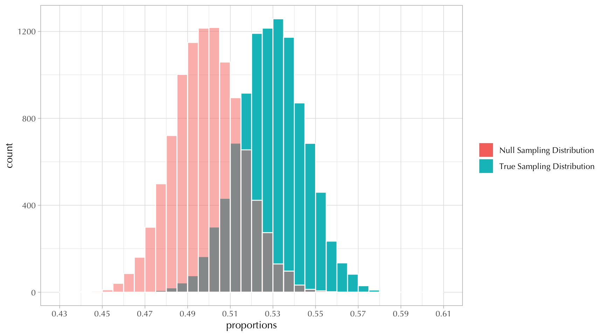

6 Week 6
The purpose of this week is to understand null hypothesis significance testing (NHST) and confidence intervals. We will be making use of simulation-based statistical inference (including permutation testing and bootstrapping).
These are some of the big ideas we will review:
Sampling Distributions.
Confidence Intervals.
P-values and null-hypothesis testing.
And here are some of the applications we will review:
Differences in proportions.
Chi-square ( \(\chi^2\) ) tests for independence.
Set up
Don’t forget to put these lines at the beginning of your quarto document:
These are some useful readings:
“There is still only one test” by Allen Downey
The documentation for the
inferpackage is pretty good.The American Statistical Association’s Statement on Statistical Significance and P-Values.
https://www.tandfonline.com/doi/epdf/10.1080/00031305.2016.1154108
6.1 The Truth is Known
6.1.1 Sampling Distributions
We have already seen sampling distributions in class.
For example, suppose we know that the true proportion of people voting Democrats is \(0.53\). If we decide to poll \(1000\) individuals, what can we say beforehand about the unobserved results?
The following chunk of code simulates this sampling distribution.
Code
S <- 1e4 ## number of simulated draws
poll_size <- 1000 ## sample size
draws <- rbinom(S, size = poll_size, prob = 0.53)
proportions <- draws / poll_size
tibble(proportions) |>
ggplot(aes(proportions)) +
geom_histogram(color = "white", boundary = 0.5, binwidth = 0.005) +
labs(title = "Sampling Distribution of p = 0.53 and n = 1000")
This sampling distribution is centered around the true value of \(0.53\).
The standard error is the standard deviation of the sample distribution.
Furthermore, this sampling distribution looks normal, which is something we come to expect because of the Central Limit Theorem.
In a normal distribution:
We expect 68% of the values to be within 1 standard deviations around the center.
We expect 95% of the values to be roughly within 2 standard deviations around the mean.
Now that we know this we can ask questions such as what is the probability that a poll of 1000 people tells us that the proportion of people voting Democrats is less than or equal to \(0.5\)?
So, the probability is very low. It seems that a poll of 1000 is very likely to declare the correct winner. Researchers do this kind of calculation all the time to make sure their sample size is sufficiently large for their purposes.
Sampling distributions without simulations (aka using Math)
Because of the CLT, we can construct some sampling distributions simply by calculating the center and the spread.
We know the center is \(0.53\), and there’s a convenient formula for calculating the standard error of a proportion:
\[ \text{se}_p = \sqrt{\frac{p(1-p)}{n}} = \sqrt{\frac{0.53 \times 0.47}{1000}} \approx 0.01578 \]
We can overlay this “analytical” sampling distribution on top of our simulated sampling distribution like this:
Code
tibble(proportions) |>
ggplot(aes(proportions)) +
geom_histogram(
color = "white", boundary = 0.5, binwidth = 0.005,
## this is a little hack to ensure the y-axis are the same
mapping = aes(y = after_stat(density))
) +
labs(title = "Sampling Distribution of p = 0.53 and n = 1000") +
## adding the normal distribution on top
geom_function(fun = \(x) dnorm(x, mean = 0.53, sd = se)) We can ask the same question as before: What is the probability that a poll of 1000 people tells us that the proportion of people voting Democrats is less than or equal to \(0.5\)? This probability is a tail-area probability. We call them like that because they correspond to that little shaded area under the curve.
6.1.2 Exercise
6.1.3 Confidence Intervals
Confidence intervals are constructed from the data we get to observe. In the example above, we established that the true population parameter was equal to \(0.53\) and that the sample size was equal to \(1000\).
This is how one dataset could look like:
Code
int [1:1000] 0 0 1 1 1 1 1 1 1 0 ...The estimated proportion from this one dataset is calculated as follows:
It’s increasingly common practice to estimate standard errors using a computational approximation technique called the bootstrap.
Bootstrap resampling is done with replacement; that is, the same data point can appear multiple times in a resampled dataset. This is necessary, as otherwise it would not be possible to get new datasets of the same size as the original.
The following chunk of code estimates 10,000 resampled proportions.
Code
num [1:10000] 0.547 0.525 0.521 0.499 0.484 0.52 0.507 0.517 0.494 0.516 ...We can then construct a confidence interval using the quantile() function on the bootstrap statistics.
This is how the bootstrap proportions—and the 95% confidence interval—compare to the “true” sampling distribution:
Code
ggplot() +
geom_histogram(
data = tibble(proportions),
mapping = aes(proportions, fill = "sampling distribution"),
color = "white",
boundary = 0.5,
binwidth = 0.005
) +
geom_histogram(
data = tibble(boot_stats),
mapping = aes(boot_stats, fill = "bootstrap proportions"),
color = "white",
alpha = 1/2,
boundary = 0.5,
binwidth = 0.005
) +
geom_vline(xintercept = ci95, linetype = "dashed") +
labs(fill = NULL, title = "95% Confidence Interval", y = "count") +
annotate(
"text", x = prop_hat, y = 500, size = 5,
## hack for LaTeX expressions in graphs
label = latex2exp::TeX(paste("\\hat{p} =", prop_hat))
)Confidence intervals without simulations (aka using Math)
We can also estimate standard errors “analytically” using the following formula:
\[ \widehat{\text{se}_p} = \sqrt{\frac{\hat{p}(1-\hat{p})}{n}} \]
Assuming that the normal distribution kicks in because of the CLT, we can estimate the 95% confidence interval using the qnorm() function:
In this case, both confidence intervals are identical. But we did have to make more assumptions (e.g., using a normal distribution)! And we also had to use formulas that we might not understand (e.g., the formula for \(\widehat{\text{se}_p}\) )!
Code
prop_hat <- mean(one_dataset)
se_hat <- sqrt(prop_hat * (1 - prop_hat) / 1000)
ci95 <- qnorm(c(0.025, 0.975), mean = prop_hat, sd = se_hat)
ggplot() +
stat_function(
geom = "area",
fun = \(x) dnorm(x, 0.53, sd = sqrt(0.53*0.47/1000)),
fill = "steelblue1"
) +
stat_function(
geom = "area",
fun = \(x) dnorm(x, prop_hat, se_hat),
fill = "pink", alpha = 4/5
) +
geom_vline(xintercept = ci95, linetype = "dashed") +
scale_x_continuous(breaks = seq(0.43, 0.6, 0.02), limits = c(0.43, 0.6)) +
labs(x = "proportions", y = "density", title = "95% Confidence Interval")6.1.4 NHST
Null Hypothesis Statistical Testing also involves the construction of sampling distributions—i.e., we first construct the sampling distribution of the “null model.”
This procedure can be quite mechanical:
We assume a hypothesis we would like to refute: a null hypothesis often denoted as \(H_0\).
We choose a test statistic (e.g., an average, a proportion), which is some function of the observed data.
We derive the sampling distribution of the test statistic, given the null hypothesis. This distribution is also called the reference distribution.
We ask whether the observed value of the test statistic is likely to occur under the reference distribution. This probability is also known as a \(p\)-value.
The \(p\)-value is the probability that, under the null hypothesis, we observe a value of the test statistic at least as extreme as the one we actually observed.
We reject the null hypothesis if the \(p\)-value is less than or equal to the confidence level \(\alpha\). Otherwise, we retain the null hypothesis (i.e., we fail to reject the null hypothesis).
For example, continuing the previous example, suppose that our null model ( \(H_0\) ) is that the proportion of people who vote Democrat and Republican is the same—i.e., that \(p = 0.5\).
We can simulate the null distribution as follows:
We can overlay the null distribution on top of the sampling distribution for the “true” parameter as follows:
Code
ggplot() +
geom_histogram(
data = tibble(proportions),
mapping = aes(proportions, fill = "True Sampling Distribution"),
color = "white", boundary = 0.5, binwidth = 0.005,
) +
geom_histogram(
data = tibble(null),
mapping = aes(null, fill = "Null Sampling Distribution"),
color = "white", boundary = 0.5, binwidth = 0.005,
alpha = 1/2
) +
scale_x_continuous(breaks = seq(0.43, 0.61, 0.02), limits = c(0.43, 0.61)) +
labs(fill = NULL)
6.1.5 Exercise
6.1.6 Difference in Proportions
We can repeat everything we did before for other scenarios; for example, a difference in proportions.
Suppose we have to groups of people (e.g., men and women) who differ in the proportion of voting Democrat.
For example, we can assume that \(p_1 = 0.5\) and that \(p_2 = 0.6\).
Here, the true difference in proportions is \(\theta = p_1 - p_2 = -0.1\).
The following chunk creates a sampling distribution for this new parameter \(\theta\).
As before, the sampling distribution is centered around the true value of \(-0.1\)
And the standard error is given by:
6.1.7 Exercise
6.1.8 Exercise
6.2 The Data is Known
Here we will work with GSS data.
Copy the following chunk of code to get the data frame we will be using.
Code
Rows: 2,235
Columns: 3
$ sex <fct> male, male, female, male, female, female, male, female, male,…
$ attend <dbl> 5, 2, 6, 8, 4, 7, 7, 0, 4, 5, 0, 3, 0, 7, 1, 0, 4, 5, 2, 7, 1…
$ polviews <dbl> 6, 5, 4, 7, 3, 4, 5, 4, 6, 4, 4, 3, 2, 5, 2, 6, 2, 4, 6, 6, 4…